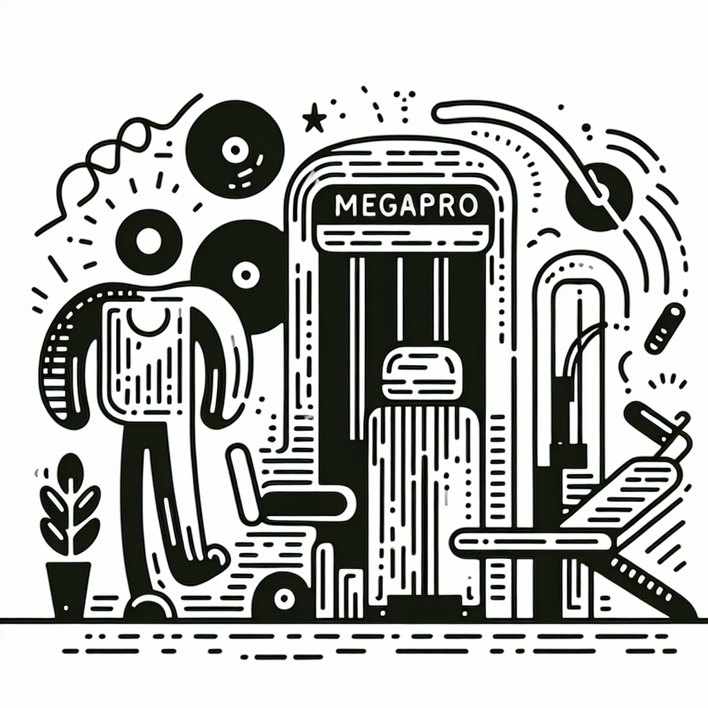

Combien de séances de Lagree par semaine pour voir des résultats ?
Vous êtes-vous déjà demandé combien de séances de Lagree il vous faudrait pour enfin voir poindre les résultats que vous espérez tant ? Vous n'êtes pas seul ! Ici, à DOZ Anglet, où nous mélangeons le bien-être du corps et l'éveil des papilles gustatives, nous recevons cette question fréquemment. Allons démystifier ensemble la méthode Lagree et découvrir comment maximiser vos séances pour que l'effort consenti lors de vos sessions se concrétise en résultats palpables.
Comprendre la méthode Lagree
Avant de plonger dans le nombre idéal de séances, il est important de comprendre ce qu'est réellement le Lagree. Importée directement de Californie, la méthode Lagree est un entraînement fitness haute intensité, sans impact, qui se concentre sur la résistance musculaire. Élaborée par Sébastien Lagree, elle utilise des machines MegaPro pour des mouvements lents et contrôlés, combinant force, endurance, cardio, équilibre et flexibilité.
Cette méthode est particulièrement attrayante car elle est accessible à tous les niveaux de forme physique tout en offrant un challenge progressif.
Le secret d'une routine efficace
Alors, combien de fois devriez-vous vous adonner à la pratique du Lagree? Voici un guide pour vous aider à planifier vos visites au Studio Lagree de DOZ:
- 2 à 3 séances par semaine : Pour les débutants ou ceux qui cherchent à s'intégrer doucement dans une routine sportive, commencer avec deux à trois séances hebdomadaires est idéal. Cela permet à votre corps de s'adapter progressivement tout en minimisant les risques de blessures.
- 4 à 5 séances par semaine : Pour voir des résultats rapides, augmenter la fréquence à quatre ou cinq sessions peut considérablement accélérer le processus de transformation physique. Cela offre un équilibre parfait entre intensité et récupération.
- 1 session hebdomadaire : Pour ceux qui complètent le Lagree avec d'autres activités sportives telles que le surf, une séance hebdomadaire peut suffire à travailler des groupes musculaires spécifiques pour un renforcement ciblé.
Les bienfaits attendus
Intégrer le Lagree à votre routine sportive vous permettra de sculpter votre silhouette, gagner en endurance et améliorer votre équilibre. Voici ce que vous pourriez remarquer après quelques semaines :
- Raffermissement visible des muscles : Les exercices de renforcement poussent vos muscles à travailler plus fort mais sans brutalité, aidant ainsi à les tonifier efficacement.
- Sensation de bien-être accru : Le Lagree agit comme un exutoire pour le stress accumulé, vous laissant détendu et énergisé après chaque session.
- Flexibilité améliorée : Grâce aux étirements intégrés, vous noterez une amplitude de mouvement accrue et un meilleur alignement corporel.
Prêt à passer à l'action ?
Maintenant que vous avez une idée claire sur la fréquence idéale des séances et les résultats attendus, il ne vous manque qu'une dose de motivation pour mettre votre connaissance en application. Chez DOZ, chaque session est plus qu'un simple entraînement ; c'est une expérience qui vous rapproche un peu plus de votre zen personnel grâce à notre atmosphère unique. Imaginez-vous sortant d'une séance intense, revitalisé et prêt à retrouver notre Coffee Shop pour un smoothie énergisant ou un café de spécialité fraîchement torréfié.
Conclusion
Qu'il s'agisse d'une première introduction à la méthode ou de la poursuite d'un objectif de fitness, chaque instant passé au Studio Lagree de DOZ est une opportunité de pousser vos limites, tout en vous imprégnant de cette philosophie 'Instant Brut'. Rejoignez-nous pour une session et découvrez la magie de notre espace où le béton, le bois et le métal se marient pour créer un environnement propice à l'effort et au réconfort.
Ne perdez plus de temps : réservez votre séance et vivez l'expérience DOZ dès aujourd'hui. Nous sommes impatients de vous accueillir et de vous accompagner sur votre chemin vers le bien-être !